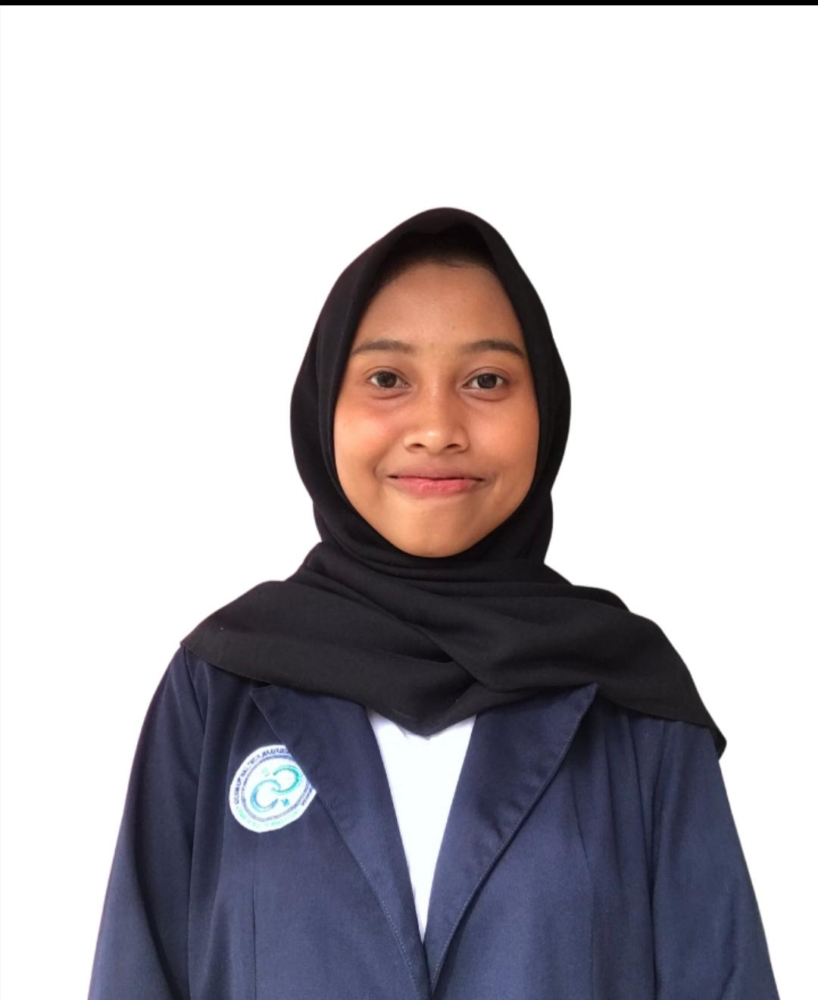

Indramayu, 30 April 2005
Perumahan Talaga Sunda, Dangdeur, Subang
0895320335637
nashaluap@gmail.com
SD Negeri Nusa Indah
MTs Negeri 1 Subang
SMA Negeri 1 Subang
Ilmu Pengetahuan Sosial
Politeknik Negeri Subang
D3 Sistem Informasi
Pengurus Himpunan Teknologi Informasi dan Komputer
Mengikuti seminar Digital Festival
Project 1
Sistem Sederhana Berbasis VBA Excel UMKM Biofor Maggot
Project 2
Sistem Informasi Pemesanan Toko Bunga Dan Buket (Florist) Berbasis Website Native